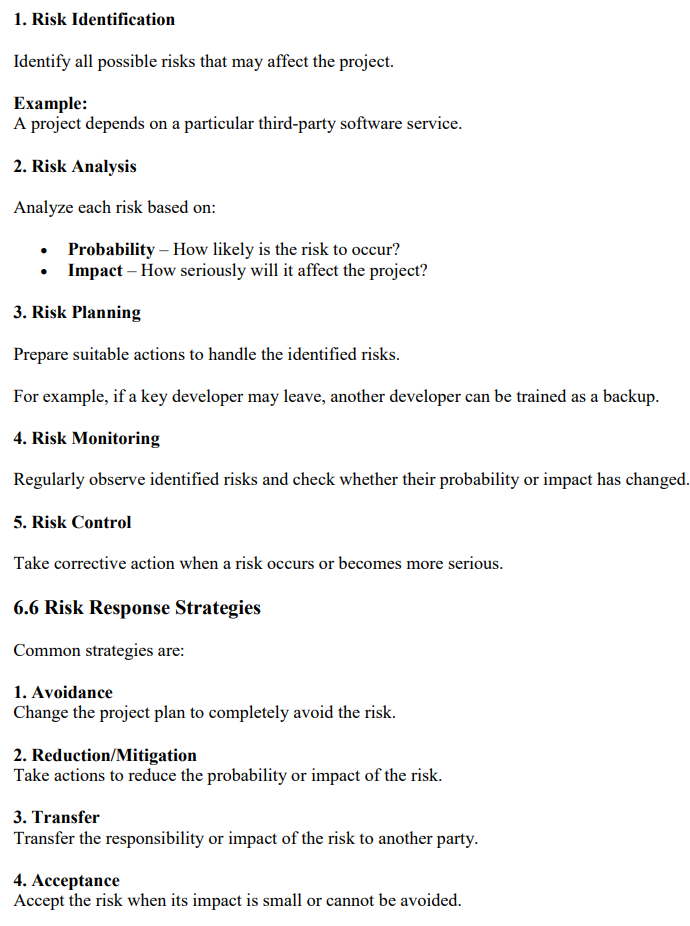
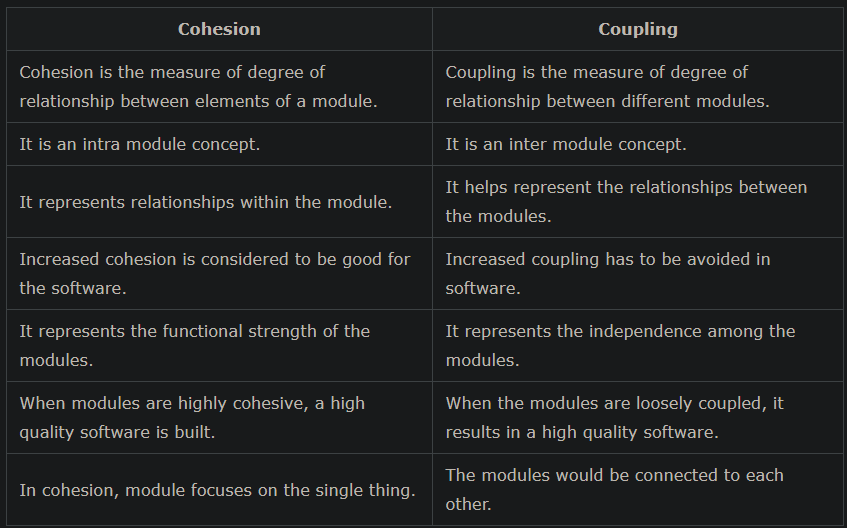

Software Engineering – Exam Question & Answer Set
Unit III (Software Project Management) & Unit IV (Design & UML) · 10 Marks Each
Questions Covered
- Define Software Project Management. Why is it essential?
- Factors influencing selection of project approach; comparison of approaches.
- Class diagram of Library Management System with OOD concepts.
- Design Concepts: Abstraction, Modularity, Refinement, Refactoring, Pattern.
- Types of Risk and the Risk Management Process.
- Functional Independence; Cohesion vs Coupling.
- Project Planning and Scheduling; Gantt Chart example.
- Project Organization and Team Structures (two structures in detail).
- Interface Design and Component-Level Design with examples.
- Deployment-Level Design and Architectural Design Model with examples.
Q1. Define Software Project Management. Why is it essential for successful software development?
10 MarksSoftware development involves many interlinked activities — requirement analysis, design, coding, testing, and maintenance — that must be properly coordinated. SPM manages all activities and resources required to develop software successfully, keeping four key aspects in balance: Time + Cost + Scope + Quality.
software project management means managing all the activities and resources required to develop software successfully.
Why SPM is Essential for successful software development:
- Completes the project on time
- Controls project cost within budget
- Manages resources (people, hardware, software) effectively
- Maintains required software quality
- Identifies and manages risks before they cause failure
- Coordinates team members and their responsibilities
- Tracks project progress against the plan
- Ensures customer requirements are satisfied
Conclusion: SPM is essential because software projects are complex and resource-intensive; without systematic planning and control, projects commonly fail to meet deadlines, budgets, or quality expectations.
Q2. Explain the factors that influence the selection of project approach. Compare different project management approaches.
10 MarksIt defines how development activities will be planned, performed, and managed from start to completion.
Factors Influencing the Selection of a Project Approach are:
- Requirements –
If requirements are clear and stable, Waterfall may be suitable.
If requirements are likely to change frequently, Agile may be better. - Project Size –
Small projects may use simple and flexible approaches
Large and complex projects may require more structured approaches. - Project Complexity – Highly complex projects need continuous risk analysis and evaluation.
- Risk – If the project has High technical/business risk then it favors a risk-driven approach like Spiral.
- Customer Involvement – If Regular customer feedback is required then Agile or Prototyping can be useful.
- Time Available – If software needs to be delivered in small releases, an Incremental or Agile approach may be suitable.
- Team Experience – Skill and experience level of the team affects feasibility.
- Technology – If new or unfamiliar technology is being used, an approach that allows experimentation and prototyping may be preferred.
Comparison of Approaches
| Approach | Suitable When | Key Trait |
|---|---|---|
| Waterfall | Requirements clear and stable | Sequential, rigid phases |
| Incremental | Software can be delivered in parts | Delivered in functional increments |
| Prototyping | Requirements unclear | Builds a working model to refine requirements |
| Spiral | Project has significant risk | Risk analysis in every cycle |
| Agile | Requirements change frequently, feedback important | Iterative, flexible, customer-collaborative |
Conclusion: Selecting a project approach means choosing the most suitable development model based on requirements, size, complexity, risk, time, resources, and customer involvement — no single approach fits every project.
Q3. Design a class diagram of Library Management System and explain how the relevant Object-Oriented Design Concepts are represented.
10 Marks A class diagram is a structural UML diagram that models the classes of a system, their attributes, operations, and the relationships (association, aggregation, composition, generalization) among them.
Below is the complete class diagram for a Library Management System, consisting of six classes — Librarian, User, Book, Category, IssueRecord, and Member.
 OOP-GFG
OOP-GFG
Key Attributes / Methods
- Librarian: employeeId, name, phone | addBook(), removeBook(), manageMembers()
- User: userId, name, email, password | login(), logout(), updateProfile()
- Book: bookId, title, author, category, status | isAvailable(), markIssued(), markReturned()
- Category: categoryId, name, description | addCategory(), updateCategory(), deleteCategory()
- IssueRecord: issueId, memberId, bookId, issueDate, dueDate, returnDate | calculateFine(), markReturned()
- Member: memberId, name, email, phone, address, joinDate, type | borrowBook(), returnBook(), viewIssuedBooks(), payFine()
Relationships in the Diagram
- Librarian — Book (1 to 0..*): a plain association labelled "manages" — one Librarian manages many Books.
- Book — Category (0..* to 1): an aggregation ("belongs to") — a Category can exist independently of any specific Book, so this is a weak has-a relationship.
- User — Librarian: a generalization (inheritance) — User is a specialization/subtype that inherits from Librarian.
- Book — IssueRecord (1 to 0..*): a composition ("generates") — an IssueRecord is strongly owned by the transaction on a Book; if the parent record is removed, the IssueRecord has no independent existence.
- IssueRecord — Member (0..* to 1): a plain association ("issues") — many IssueRecords are linked to one Member.
Representation of OOD Concepts
| OOD Concept | Representation in Diagram |
|---|---|
| Class | Each of the six boxes (Librarian, User, Book, Category, IssueRecord, Member) is a class, shown as three compartments: name, attributes, and operations |
| Object | A specific instance of a class at run-time, e.g., a Book object with bookId = "B101", title = "Data Structures" |
| Encapsulation | Attributes (e.g., password, status, dueDate) are private (-), accessible to the outside only through public methods (+) like login(), markIssued(), calculateFine() |
| Inheritance (Generalization) | User ▷ Librarian — shown with a hollow triangle arrow — User inherits common properties/behavior from Librarian |
| Association | Plain lines: Librarian "manages" Book, and IssueRecord "issues" to Member — a general link between two independent classes |
| Aggregation | Book ◇ Category — open diamond — a weak "has-a": a Category is not destroyed if a Book is deleted |
| Composition | Book ● IssueRecord ("generates") — filled diamond — a strong "has-a": the IssueRecord's existence is tied to the Book transaction that generated it |
| Multiplicity | Numbers like 1, 0..* at each end of a relationship specify how many objects of one class relate to objects of the other |
Conclusion: The class diagram models the complete static structure of the Library Management System — its classes, attributes, operations, and relationships. Association, Aggregation, Composition, and Generalization together capture how objects of these classes relate to and depend on one another, while Encapsulation ensures each class's internal data is protected and accessed only through defined methods.
Q4. Define and explain the following Design Concepts: Abstraction, Modularity, Refinement, Refactoring, Pattern.
10 Marksi. Abstraction
Types: Data Abstraction (hides how data is stored), Procedural Abstraction (hides internal steps of a function), Control Abstraction (hides complex control logic behind simple instructions).
ii. Modularity
Types: Functional Modularity (e.g., Login Module, Payment Module) and Object-Oriented Modularity (e.g., Student class, Product class).
iii. Refinement
Types: Top-Down Refinement (main system divided progressively) and Stepwise Refinement (details added step by step).
iv. Refactoring
Techniques: Rename Method (e.g., calc() → calculateTotal()), Extract Method (splitting a long function), Remove Duplicate Code.
v. Pattern (Design Pattern)
- Creational – Singleton, Factory Method, Abstract Factory, Builder, Prototype
- Structural – Adapter, Decorator, Facade, Composite, Proxy
- Behavioral – Observer, Strategy, Command, State, Iterator
Conclusion: Abstraction, Modularity, Refinement, Refactoring, and Patterns together help produce software that is simple, reusable, maintainable, and of high quality.
Q5. Explain the various types of Risk and the Risk Management Process.
10 MarksThe various types of Risks are as follows :
| Type | Description | Examples |
|---|---|---|
| Project Risks | These risks affect the project schedule, resources, or cost. | Lack of skilled developers, incorrect cost estimation, Delay in project activities, Team member leaving the project |
| Technical Risks | These risks are related to technology, design, or implementation. | New technology fails, Performance problems, Integration problems, Difficulties in implementing a feature |
| Business Risks | These risks affect the business or organization. | Change in business requirements, loss of funding, Product may not meet market needs, customer cancels project |
Risk Management Process

Risk: The developer may leave the project.
Impact: Project may be delayed.
Risk response: Train another team member and maintain proper documentation.
Thus, the project can continue even if the original developer leaves.
Q6. Describe the concept of Functional Independence and differentiate between Cohesion and Coupling.
10 MarksFunctional Independence = High Cohesion + Low Coupling
Components
1. High Cohesion
High cohesion means all functions within a module are closely related and work together to perform a single task.
2. Low Coupling
Low coupling means modules have minimum dependency on each other, so changes in one module have little effect on others.
Login Module → User authentication
Product Module → Product management
Payment Module → Payment processing
Each module performs its own task with minimum dependency on other modules.
Types of Cohesion (weakest to strongest)
- Coincidental – unrelated tasks grouped in one module (weakest)
- Logical – similar-category tasks grouped together but executed differently
- Temporal – tasks grouped because they execute at the same time (e.g., initialization module)
- Procedural – tasks grouped because they follow a certain sequence of execution
- Communicational – tasks grouped because they operate on the same data
- Sequential – output of one task is the input of the next
- Functional – all tasks contribute to a single, well-defined task (strongest, most desirable)
Types of Coupling (loosest to tightest)
- Data Coupling – modules share data only via parameters (loosest, most desirable)
- Stamp Coupling – modules share a composite data structure but use only part of it
- Control Coupling – one module controls the logic/flow of another by passing control flags
- Common Coupling – modules share global data
- Content Coupling – one module directly modifies/relies on the internal workings of another (tightest, least desirable)
Cohesion vs Coupling (Include the above types in this distinguish)

| Example: Login module handling only authentication | Example: Payment module functioning independently of Student module |
Advantages of Functional Independence
- Easy to understand, test, and debug
- Simplifies maintenance
- Improves code reusability
- Changes in one module minimally affect others
Conclusion: A well-designed system aims for high cohesion within modules and low coupling between modules, achieving functional independence and easier maintainability.
Q7. Describe the process of Project Planning and Scheduling. Draw a Gantt Chart for any one suitable example.
10 Marks| Project Planning | Project Scheduling |
|---|---|
Project Planning: Project Planning is the process of deciding what work has to be done, how it will be done, who will do it, and what resources are required to complete a software project successfully. - Project planning is preparing a roadmap for completing the software project. - Project Planning defines the work, resources, cost, and approach required for a project. | Project Scheduling: Project Scheduling is the process of deciding when each project activity will start and finish. - Scheduling tells us when each task should be performed and how long it should take. - Project Scheduling determines the sequence and timing of project activities. |
Objectives of Project Planning:
Project planning helps to: | Objectives of Project Scheduling:
Project scheduling helps to: |
Steps in Project Planning:
| Steps in Project Scheduling:
|
Planning vs Scheduling
| Project Planning | Project Scheduling |
|---|---|
| Decides what needs to be done | Decides when it will be done |
| Defines activities, resources, cost | Defines start/finish dates |
| Broader activity | Part of project planning |
Gantt Chart Example — Library Management System (10-week project)
| Activity | Duration | Wk1 | Wk2 | Wk3 | Wk4 | Wk5 | Wk6 | Wk7 | Wk8 | Wk9 | Wk10 |
|---|---|---|---|---|---|---|---|---|---|---|---|
| Requirement Analysis | 1 wk | █ | |||||||||
| System Design | 2 wk | █ | █ | ||||||||
| Coding | 4 wk | █ | █ | █ | █ | ||||||
| Testing | 2 wk | █ | █ | ||||||||
| Deployment | 1 wk | █ |
Advantages of a Gantt Chart
- Gives a clear visual overview of the whole project timeline
- Shows which activities overlap and which run in sequence
- Makes it easy to track actual progress against the planned schedule
- Helps identify delays early so corrective action can be taken
Conclusion: Project Planning defines what work, resources, and approach are needed, while Scheduling determines the sequence and timing of activities. A Gantt Chart visually represents this schedule, helping the manager track progress and dependencies.
Q8. Explain the different Project Organization and Team Structures. Describe any two structures with advantages, disadvantages, and diagrams.
10 MarksProject organization defines the roles, responsibilities, and relationships among project members.
Project organization defines who will do what work and who will be responsible for the project.
A good project organization helps the team work together effectively and complete the project successfully.
The commonly used types of Structures are: Controlled Centralized, Controlled Decentralized, Democratic Decentralized.
1. Controlled Centralized Structure
In this structure, one person or a small group controls most decisions.
- Project manager has major responsibility.
- Communication mainly follows a central authority
- Suitable when quick decisions are required.
Advantages: Quick decision-making; clear authority; suitable for small/simple projects.
Disadvantages: Overloads the manager; less team creativity; poor for complex, experienced teams.
2. Democratic Decentralized Structure
In this structure, decisions are made collectively by team members.
- There is no strong central authority.
- Team members communicate directly with each other.
- Suitable for experienced teams and complex problem-solving.
Advantages: Encourages creativity and collaboration; suitable for experienced teams and complex problem-solving.
Disadvantages: Slower decision-making; may lead to conflicts without clear authority.
3. Controlled Decentralized Structure (hybrid)
In this structure, the project manager provides overall direction, but team members also participate in decision-making.
- Some decisions are centralized.
- Team members have more responsibility.
- Communication is more flexible.
Advantages: Balances fast decision-making with team input; more flexible communication than pure centralized structure.
Disadvantages: Can create confusion over which decisions are centralized vs. shared if roles aren't clearly defined.
Comparison of Team Structures
| Structure | Decision-Making | Best Suited For |
|---|---|---|
| Controlled Centralized | One person (PM) controls most decisions | Small, simple projects needing quick decisions |
| Controlled Decentralized | PM gives direction; team shares some decisions | Medium-sized projects needing a balance of control and flexibility |
| Democratic Decentralized | Decisions made collectively; no central authority | Complex projects with experienced, senior teams |
Factors Affecting Team Structure
The choice of team structure depends on:
- Project complexity
- Project size
- Team members' experience
- Team size
- Type of project
- Communication requirements
- Project deadlines
Importance of Proper Team Structure
A suitable team structure helps to:
- Improve communication
- Reduce conflicts
- Clearly define responsibilities
- Improve productivity
- Make decision-making easier
- Complete the project efficiently
Conclusion: The choice of team structure depends on project complexity and team experience — centralized structures suit small/simple projects requiring fast decisions, while decentralized structures suit complex projects with experienced, collaborative teams.
Q9. Explain Interface Design and Component-Level Design with suitable examples.
10 MarksInterface Design
Principles: Simplicity, Consistency, User-Friendliness, Feedback (e.g., "Login Successful"), Error Handling.
Components: Input Interface (accepts data, e.g., Login Form), Output Interface (displays information, e.g., Report/Receipt), Navigation Interface (helps move between screens, e.g., Menu/Back Button).
Component-Level Design
Main elements: Component/Module, Interface, Input, Processing/Logic, Output.
Conclusion: Interface Design focuses on the interaction between the user and the system, while Component-Level Design focuses on the internal working of individual modules — together they ensure the software is both usable and correctly functioning internally.
Q10. Explain Deployment-Level Design and Architectural Design Model with suitable examples.
10 MarksArchitectural Design Model
Components: Modules, Connectors, Interfaces, Data Flow.
Types: Layered Architecture, Client-Server, MVC, Microservices.
Deployment-Level Design
Main elements: Hardware, Software Components, Network, Server, Client.
Advantages of Deployment-Level Design
- Shows exactly where each software component will run
- Helps in planning installation and system setup
- Improves performance and capacity planning
- Helps manage network communication between components
- Makes future system maintenance easier
Conclusion: The Architectural Design Model defines the logical structure and interaction of software modules, while Deployment-Level Design defines the physical placement and execution of those modules on hardware — both are essential to move from design to a working, running system.